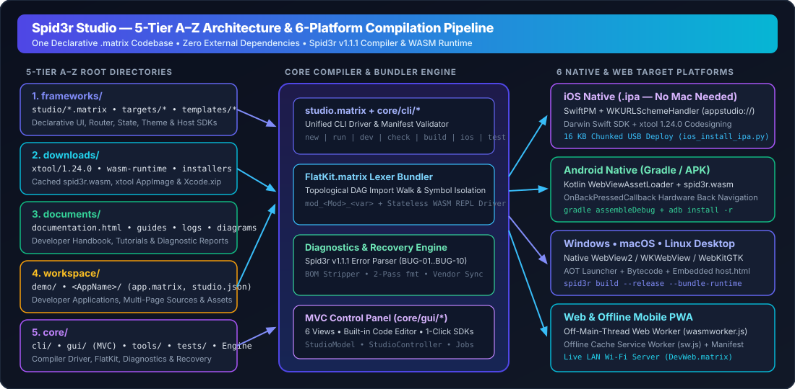
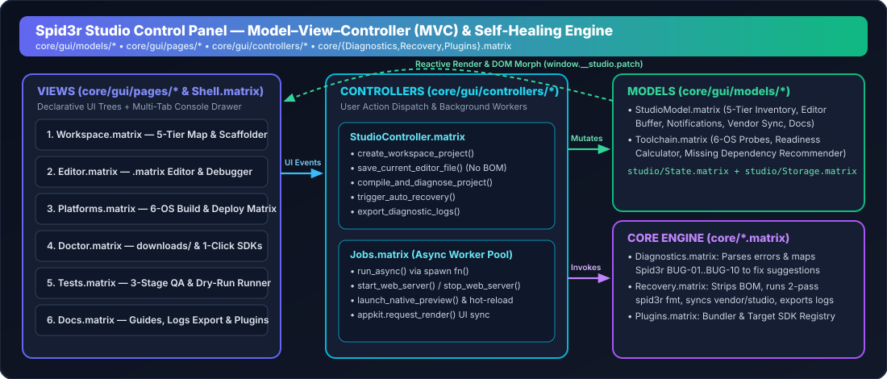
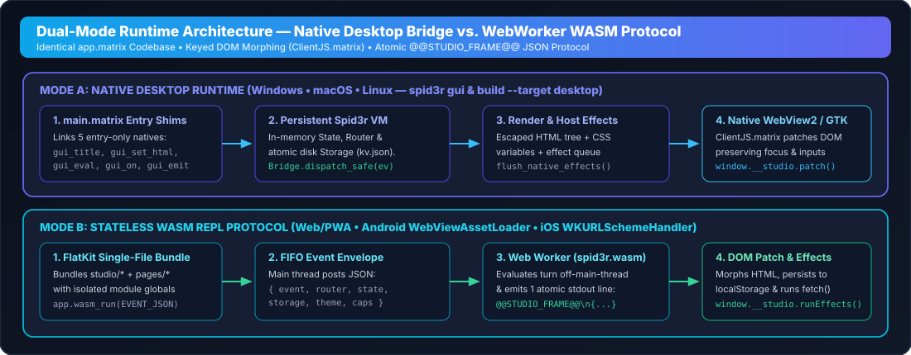

Spid3r Studio — Complete Developer Handbook
Comprehensive architectural guide, coding standards, Spid3r v1.5.0 language patterns, MVC Control Panel manual, and 6-platform compilation reference for building production applications in .matrix and .mt.
0. Get Started — Install Spid3r
spid3r CLI on your PATH before running any spid3r run studio.matrix ... command.
1. Install on Windows
Install directly from the Microsoft Store (9NPH5XX0F6KF) or download Spid3r-Setup-<version>.exe from Spid3r Releases.
2. Linux / macOS
Install with the official script:
curl -fsSL https://raw.githubusercontent.com/needyamin/spid3r/main/install.sh | shVerify release checksums on the releases page. If spid3r is not recognized afterward, reopen your terminal once to refresh PATH.
3. Verify your setup
Audit the environment from the repository root:
spid3r run studio.matrix doctorRun that command from the repository root; it checks that the language runtime, CLI, and toolchain are wired up correctly.
Install from Microsoft Store View all downloads & checksums
New to .matrix? Read the matrix-language-tutorial.md language tutorial.
1. 5-Tier A–Z Codebase Architecture
Spid3r Studio enforces a strict 5-folder root architecture so frameworks, large binary downloads, developer documentation, user application workspaces, and core engine tools never mix.

| Top-Level Folder | Subdirectories & Key Files | Responsibility & Ownership Guidelines |
|---|---|---|
1. frameworks/ |
studio/*.matrixtargets/*templates/starter/*registry.json |
All reusable UI framework modules (App, Bridge, ClientJS, Components, CSS, Http, Render, Router, State, Storage, Theme, Util), 6-OS host templates, starter scaffolding templates, and the SDK registry. |
2. downloads/ |
installers/Xcode_27.2.xipxtool/1.24.0/*wasm-runtime/1.5.0/*packages/catalog.json |
Dedicated storage for large toolchains, SDK installers, extracted xtool AppImage/SquashFS, and cached spid3r.wasm + spid3r.js runtime binaries. Ignored by Git except packages/catalog.json. |
3. documents/ |
documentation.htmlguides/*, tutorials/*references/*logs/*, reports/* |
Developer guidelines, .matrix language tutorials, studio.json references, exported Control Panel console logs (studio-control-panel.log), and JSON diagnostic reports. |
4. workspace/ |
demo/<YourApp>/ |
Dedicated developer workspace where projects are created, edited, compiled, tested, and packaged. Includes the multi-page workspace/demo showcase app. |
5. core/ |
cli/*.matrixgui/* (MVC Control Panel)tools/FlatKit.matrixtests/*.matrixDiagnostics.matrix, Recovery.matrix, Plugins.matrix |
Application engine, compiler driver subcommands, lexer-aware multi-file bundler, paced iOS USB installer, automated failure recovery, structured diagnostics, MVC Control Panel GUI, and 5 verification suites. |
2. Spid3r Studio MVC Control Panel GUI (core/gui/)
The native desktop Control Panel is architected using strict Model–View–Controller (MVC) separation:

- Models (
core/gui/models/StudioModel.matrix&core/gui/Toolchain.matrix): Encapsulate the 5-tier file inventory, active project metadata, source editor buffer, dirty state, compiler diagnostics queue, notification history, vendor sync status, and 6-OS toolchain probes. - Controllers (
core/gui/controllers/StudioController.matrix&core/gui/Jobs.matrix): Handle project creation inworkspace/, BOM-free UTF-8 file saving, 2-pass formatting, static compilation & error analysis, 1-click Auto-Recovery, background job workers, live Web/PWA server management, and log exporting. - Views (
core/gui/Shell.matrix&core/gui/pages/*.matrix): Six dedicated desktop views plus a multi-tab bottom Console / Diagnostics / Alerts drawer:
1. Workspace View
Interactive 5-tier A–Z architecture explorer, 6-OS readiness KPIs, missing dependency recommendations, project switcher, and workspace/<AppName> scaffolder.
2. Code & Debugger
Built-in .matrix and studio.json editor with 1-click Save (UTF-8 no BOM), 2-Pass Format, Compile & Check, line-by-line Spid3r suggestions, and Auto-Recovery.
3. Platforms (6 OS)
Build, preview, hot-reload, or deploy packages for Desktop (Win/macOS/Linux), Web & Mobile PWA, iOS (.ipa), and Android (APK).
4. Downloads & SDKs
Inspects downloads/ cache packages (xtool 1.24.0, spid3r.wasm, Xcode.xip) and runs 1-click installers for OpenJDK, Gradle, ADB, usbipd, and WSL2 Swift/USB tools.
5. Tests & QA
Runs the 3-stage verification pipeline (spid3r fmt --check, spid3r check --deny-warnings, and all 5 automated test suites) or headless GUI dry-runs.
6. Docs & Logs
Built-in markdown reader for documents/, 1-click log & diagnostic JSON report exporter, framework vendor update checker, Core extension registry, and bugs.html inspector.
3. Developer Guidelines & Project Structure
Every developer application lives inside workspace/<AppName>/ and separates pure application logic (app.matrix + pages/*.matrix) from the thin native entry file (main.matrix) and declarative manifest (studio.json).
app.matrix (Author File — Pages & Handlers)
import "studio/App" as appkit;
import "studio/Components" as ui;
import "studio/State" as state;
import "studio/Storage" as storage;
fn boot_app() {
state.set("count", int(storage.get("count", 0)));
}
fn increment(_ev) {
let next = int(state.get_or("count", 0)) + 1;
state.set("count", next);
storage.set("count", next);
}
fn Home() -> map {
let n = int(state.get_or("count", 0));
return ui.page([
ui.navbar("Counter Pro"),
ui.card([
ui.title("Taps: " + string(n)),
ui.button("Increment", "increment", "primary"),
]),
]);
}
public fn studio_app() {
return appkit.App("Counter Pro", "com.example.counter", "1.0.0")
.data_dir("workspace/CounterPro/storage")
.page("Home", Home)
.handler("increment", increment)
.boot(boot_app);
}main.matrix (5 Required Entry Shims)
import "app" as appdef;
fn studio_title(t: string) { gui_title(t); }
fn studio_html(h: string) { gui_set_html(h); }
fn studio_eval(js: string) { gui_eval(js); }
fn studio_on(n: string, cb) { gui_on(n, cb); }
fn studio_emit(n: string, p: string) { gui_emit(n, p); }
fn main() -> int {
return appdef.studio_app()
.bridge(
studio_title,
studio_html,
studio_eval,
studio_on,
studio_emit
)
.run();
}main.matrix separate?Native WebView and window natives (
gui_title, gui_set_html, gui_eval, gui_on, gui_emit, gui_size, etc.) exist only in the desktop spid3r gui runtime (not in browser/mobile WASM). Passing them via .bridge(...) and .window_bridge(...) keeps app.matrix 100% portable across Desktop, Web, Android, and iOS.
Core Engineering Best Practices
- Always scope
.data_dir(...)inside your project folder: Set.data_dir("workspace/<AppName>/storage")so persistentkv.jsonfiles never pollute the repository root. - Split multi-screen apps into
pages/*.matrix: Export each page function aspublic fn Detail() -> mapand import it inapp.matrix(`import "pages/Detail" as p_detail;` or named `import { Detail } from "pages/Detail";`). `FlatKit.matrix` automatically resolves the dependency DAG and isolates module globals (`mod_u_pages_Detail_`). - Use named string handlers for async HTTP callbacks: Because Web/Android/iOS WASM runs across worker turns, pass registered handler names (e.g.
http.get_async(url, "on_api_done")+.handler("on_api_done", on_api_done)) rather than ephemeral closures for async callbacks. - Provide stable
"key"props on dynamic lists: Pass{"key": "item-" + string(id)}on list rows sowindow.__studio.patchmorphs DOM nodes in place without losing input focus or scroll position.
4. Spid3r v1.5.0 & .matrix Authoring Best Practices
Spid3r v1.5.0 introduces first-class enum + exhaustive match, named imports, 26 embedded stdlib modules in WASM, and strict visibility defaults. Follow these verified practices across all .matrix and .mt files:
| Topic | Avoid | Recommended Spid3r v1.5.0 Pattern |
|---|---|---|
| Class & Module Visibility | Omitting public on class methods or exported functions.Class members default to private in Spid3r v1.5.0. |
Mark exported module symbols and public class methods/fields explicitly with public. |
Enums & Exhaustive match |
Hand-rolled tag maps or non-exhaustive match arms. |
Use public enum Status { Idle, Ready(msg) } with exhaustive match (s) { ... } across native and WASM. |
| Raw Strings for JS / CSS / JSON | let js = "function(){ return {a: 1}; }";Regular strings interpolate {...} expressions! |
Always use raw strings r#"function(){ return {a: 1}; }"# for JS, CSS, or JSON literals. |
| Root-Relative Imports | import "../studio/App" as appkit;Parent-relative ../ imports are disallowed. |
Use root-relative imports (import "studio/App" as appkit; or import { App } from "studio/App";). |
UTF-8 Without BOM & fmt |
Saving files with a UTF-8 BOM. Causes spid3r fmt --check to fail. |
Save as UTF-8 without BOM (or click Save / Auto-Recover in the Control Panel) and run spid3r fmt. |
| Background Thread UI Updates | Calling gui_eval(...) directly inside spawn fn().Never touch WebView APIs directly from worker threads. |
Mutate State inside spawn fn() and call appkit.request_render() (or use jobs.run_async(...)). |
5. Declarative UI Component Reference (frameworks/studio/Components.matrix)
Import "studio/Components" as ui; to build responsive mobile and desktop layouts. Every widget accepts an optional trailing props: map supporting "cls", "key", "flex", "width", "gap", "pad", "disabled", "role", and "aria_label".
| Category | Function Signatures | Notes & Variants |
|---|---|---|
| Layout & Containers |
ui.page(children, props = {})ui.card(children, props = {})ui.column(children, props = {})ui.row(children, props = {})ui.grid(children, cols = 2, gap = 10, props = {})ui.scroll(children, props = {})ui.spacer(px = 12) / ui.flex_spacer() / ui.divider()
|
ui.page automatically hoists any child ui.navbar to a sticky top header. Pass {"wrap": true, "gap": 8} on ui.row for responsive flex wrapping. |
| Typography & Chrome |
ui.text(t, style = "body", props = {})ui.title(t) / ui.subtitle(t) / ui.caption(t)ui.navbar(title, actions = [])ui.tabbar(tabs, active_idx)ui.fab(icon, onTap, props = {})
|
Text styles: "h1", "h2", "h3", "title", "subtitle", "body", "caption", "muted", "mono", "bold". All text is HTML-escaped automatically. |
| Buttons & Chips |
ui.button(label, onTap, variant = "primary", props = {})ui.iconbutton(icon, onTap, variant = "ghost", props = {})ui.chip(label, onTap = null, selected = false, props = {})ui.badge(label, color = "primary")
|
Button variants: "primary", "secondary", "danger", "outline", "ghost". Badge colors: "primary", "secondary", "accent", "danger", "success". |
| Forms & Inputs |
ui.form(children, onSubmit, props = {})ui.input(placeholder, onInput, value = "", kind = "text", props = {})ui.textarea(placeholder, onInput, value = "", props = {})ui.checkbox(checked, onChange, label = "", props = {})ui.select(options, value, onChange, props = {})ui.segmented(options, selected_idx, onChange, props = {})ui.toggle(on, onChange, props = {})ui.slider(min, max, value, onInput, props = {})
|
Inputs debounce keystrokes in the browser and automatically flush pending values before any button click or form submit so fast typing is never lost. |
| Feedback & Overlays |
ui.progress(ratio) (clamped 0.0..1.0)ui.spinner(size = 24, label = "Loading")ui.dialog(title, message, actions = [], props = {})ui.confirm(title, message, onConfirm, onCancel)ui.toast(message, variant = "info", onDismiss = null)ui.sheet(title, children, onDismiss = null)
|
Overlays render with proper ARIA role="dialog" / role="status" attributes and backdrop click dismissal. |
7. Project Manifest (studio.json) Schema
Every project in workspace/ is configured by a single studio.json file at its root:
{
"name": "Studio Demo",
"bundleID": "sh.appstudio.demo",
"version": "1.0.0",
"entry": "main.matrix",
"icon": "assets/logo.svg",
"theme": {
"mode": "dark",
"primary": "#6366F1"
},
"android": {
"minSdk": 24,
"targetSdk": 34,
"versionCode": 1
},
"ios": {
"deploymentTarget": "16.0"
}
}Any static files placed inside <appdir>/assets/ are automatically copied into Web (build/web/assets/), Desktop (build/desktop/assets/), Android (app/src/main/assets/assets/), and iOS (Resources/app/assets/) builds.
8. Cross-Platform Build & Deployment Pipelines (6 OS)

| Platform | CLI Command | Output Location | Architecture & Deployment Details |
|---|---|---|---|
| Windows / macOS / Linux Desktop | spid3r run studio.matrix build <appdir> --target desktop |
<appdir>/build/desktop/<Name>(.exe) |
Compiles main.matrix to bytecode and links a standalone native executable with embedded frameworks/targets/host.html and bundled runtime. |
| Web & Offline Mobile PWA | spid3r run studio.matrix build <appdir> --target web |
<appdir>/build/web/index.html |
Bundles frameworks/studio/* + app modules via FlatKit.matrix, emits wasmworker.js, spid3r.wasm, manifest.json, and offline Service Worker sw.js. |
iOS Native (.ipa without a Mac) |
spid3r run studio.matrix ios run <appdir> |
<appdir>/build/ios/<SwiftName>/xtool/<SwiftName>.ipa |
Generates a SwiftPM package with a custom WKURLSchemeHandler (appstudio://app/), compiles arm64 Darwin code via Swift + xtool 1.24.0, signs with your Apple ID, and installs over USB via core/tools/ios_install_ipa.py (16 KB paced chunks). |
| Android Native (Gradle / APK) | spid3r run studio.matrix build <appdir> --target android |
<appdir>/build/android/AndroidApp/ |
Generates a complete Kotlin + Gradle project using WebViewAssetLoader (https://appassets.androidplatform.net/assets/index.html) and hardware Back navigation. Assemble APK via gradle assembleDebug. |
9. Compiler Diagnostics, Automated QA & 1-Click Failure Recovery
- Structured Error & Suggestion Engine (
core/Diagnostics.matrix): Parseserror[parser],error[semantic],error[runtime], and formatter warnings, and maps Spid3r v1.5.0 diagnostics (visibility, exhaustivematch, checked arithmetic, module resolution) to exact fix instructions in the Control Panel. - Self-Healing Project Recovery (
core/Recovery.matrix): Clicking Auto-Recover in the Control Panel strips UTF-8 BOMs across all project files, runsspid3r fmtconvergence, synchronizesvendor/studio/andtargets/host.htmlfromframeworks/, clears stale lock flags, and exports diagnostic reports todocuments/logs/anddocuments/reports/.
10. Complete CLI Command Reference
# Launch the Desktop MVC Control Panel GUI
spid3r run studio.matrix gui
# Scaffold a new project in workspace/
spid3r run studio.matrix new MyApp workspace/MyApp
# Preview & Hot-Reload Development
spid3r run studio.matrix run workspace/demo
spid3r run studio.matrix dev workspace/demo
spid3r run studio.matrix dev workspace/demo --target web --host 0.0.0.0 --port 8080
# Static Analysis & Multi-Platform Packaging
spid3r run studio.matrix check workspace/demo
spid3r run studio.matrix build workspace/demo --target web
spid3r run studio.matrix build workspace/demo --target desktop
spid3r run studio.matrix build workspace/demo --target android
spid3r run studio.matrix build workspace/demo --target ios
# iOS Toolchain & Real-Device Deployment (xtool 1.24.0)
spid3r run studio.matrix ios install-tools
spid3r run studio.matrix ios sdk-install downloads/installers/Xcode_27.2.xip
spid3r run studio.matrix ios status
spid3r run studio.matrix ios devices
spid3r run studio.matrix ios run workspace/demo
spid3r run studio.matrix ios launch workspace/demo
spid3r run studio.matrix ios uninstall workspace/demo
# Verification, Maintenance & Environment Audit
spid3r run studio.matrix test
spid3r run studio.matrix upgrade workspace/demo
spid3r run studio.matrix clean workspace/demo [--cache]
spid3r run studio.matrix doctor